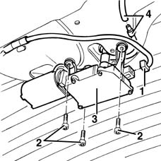

5050C42 rear wiper motor - r+r
- Path
- Procedures > 50 AUXILIARY UNITS > 5050 SCREEN WASHERS AND HEADLAMP WASH/WIPE > 5050C rear wash/wipe > 5050C42 rear wiper motor - r+r
- Kind
- repair procedure (removal / refitting; the operation number is the code)
- Applies to
- all engines; all production periods
- Interactive page
- https://sloeber94.github.io/elrnDB-fMltpl/en/#/2891855
Applies to: all engines; all production periods
 Removing
Removing
 Refitting
Refitting7015A04 tailgate interior panel - r+r
1. Disconnect the electrical connection.
 | Name | Connector |
|---|---|---|
1 | Rear window wiper motor |
2. Unscrew the motor retaining bolt.
3. Move the motor slightly.
4. Disconnect the windscreen washer jet pipe.

Applies to: all engines; all production periods
Refitting
RemovingCheck that the motor is undamaged, and if necessary conduct an electrical test on it.
Connect the windscreen washer jet pipe.
Fit the motor and tighten the retaining bolts.
Connect the electrical connection.
Before refitting the wiper arm, zero the motor activating it through the rear windscreen wiper control.
Topics linked from this page (3)
Topics that link to this page (5)
- J04 BACK WINDOW WIPER NOT WORKING
- 5050C10 rear window washer jet - r+r clean and/or position
- 5050C45 rear motor wiper intermittent function - r r
- 7035B12 Tailgate rearscreen (bonded type) WINDOW GLASS - R.R. - Includes. cleaning edges of glass and housing in tailgate
- 7035B16 Tailgate windscreen (bonded type) WINDOW GLASS - R.R. - Includes. cleaning housing in tailgate